A
Focus
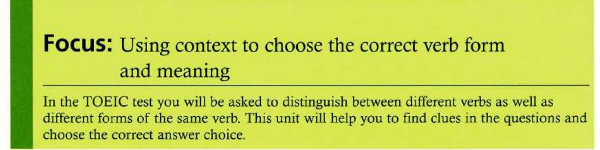
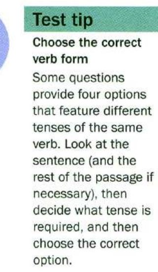
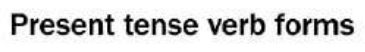
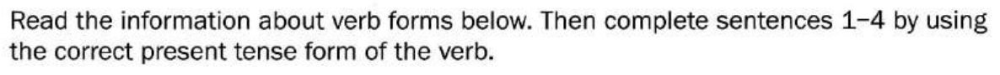
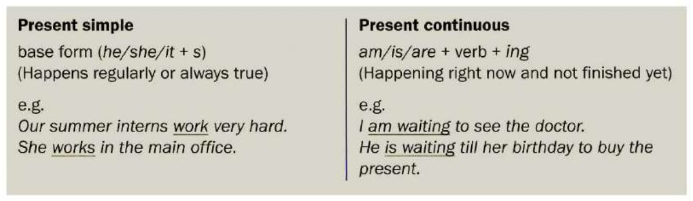
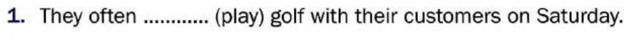
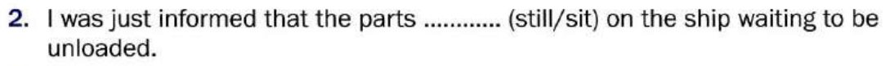
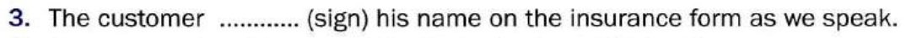
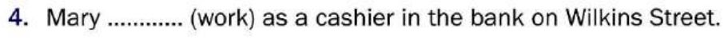
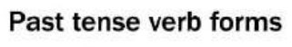
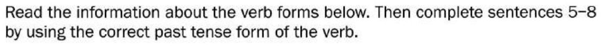
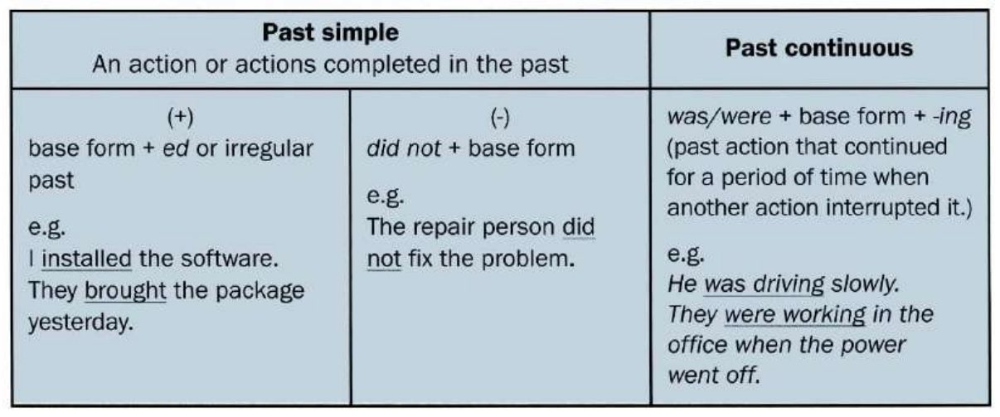
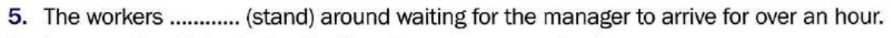
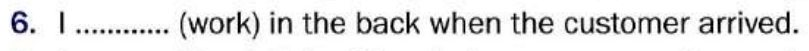
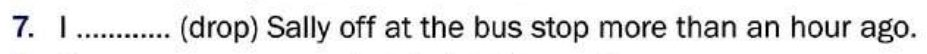
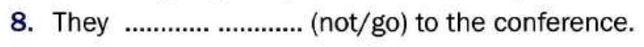
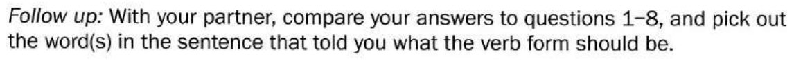
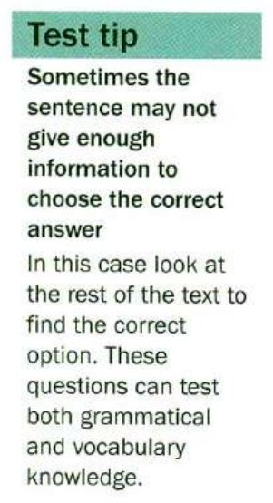
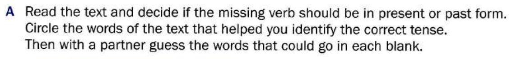
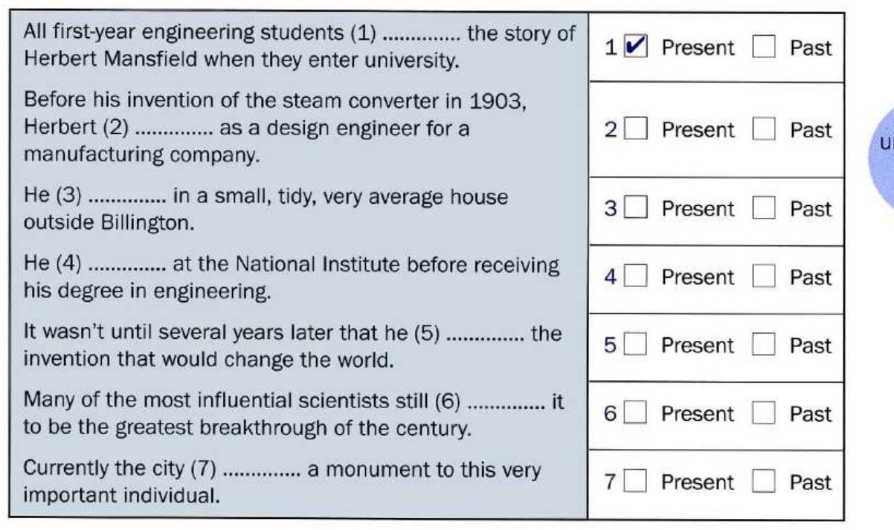
Blank 1 — “when they enter university”
Blank 2
Blank 3
Blank 4
Blank 5
Blank 6
Blank 7
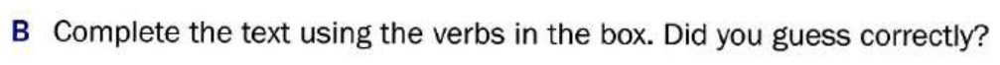
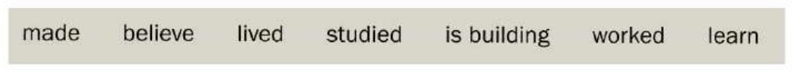
Blank 1
Blank 2
Blank 3
Blank 4
Blank 5
Blank 6
Blank 7
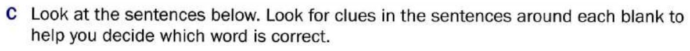
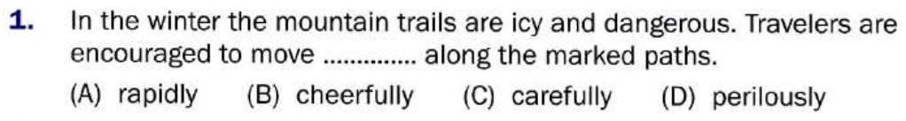
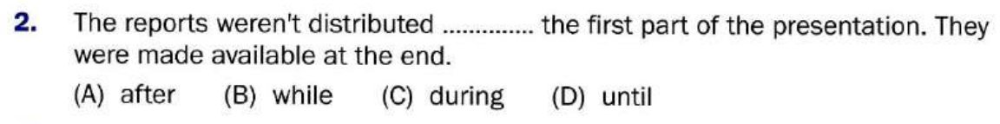
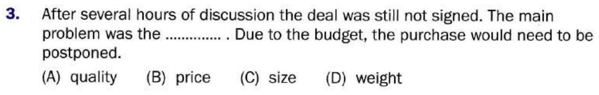
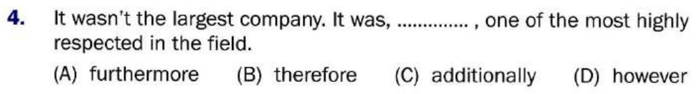
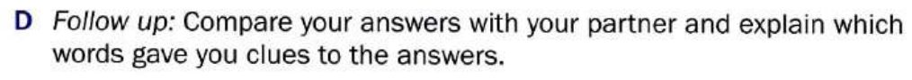
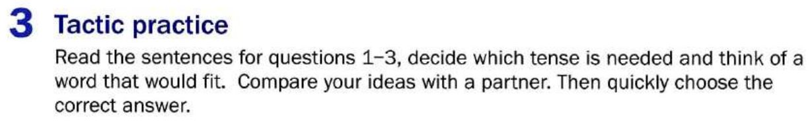
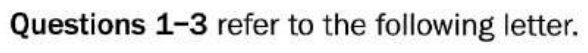
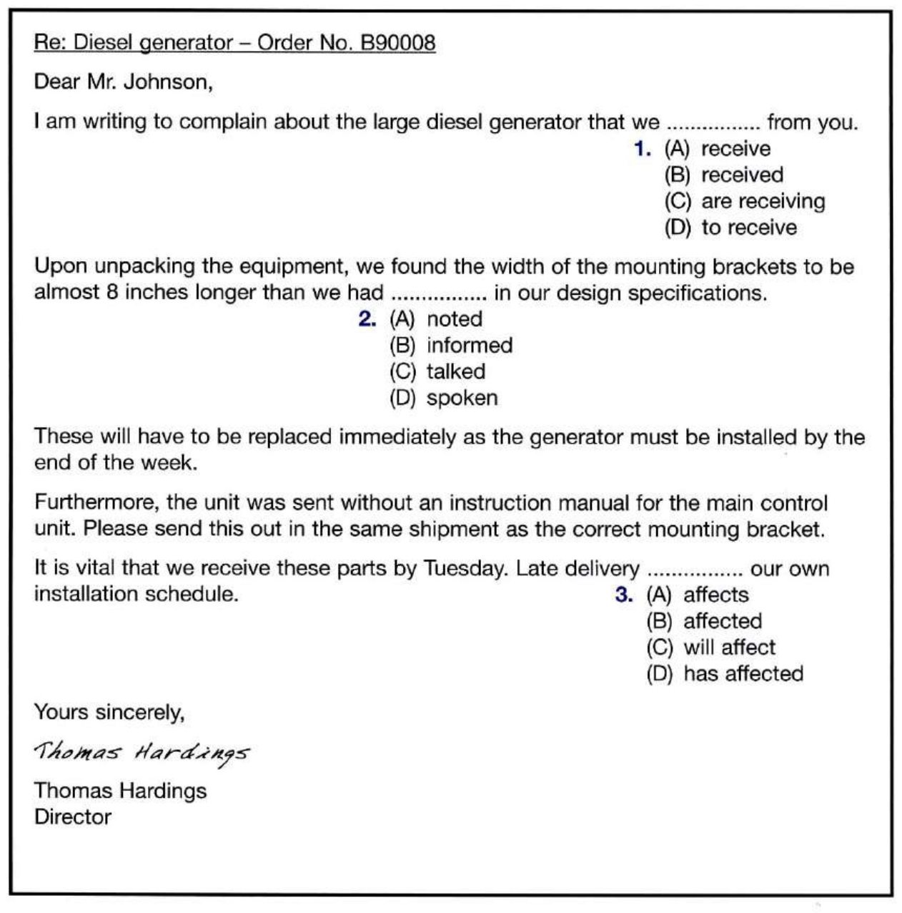
Question 1
Question 2
Question 3
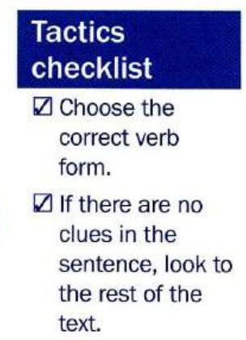
B
Mini-test
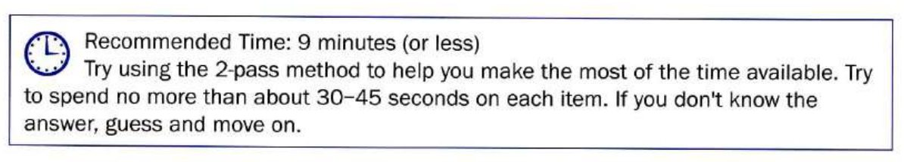
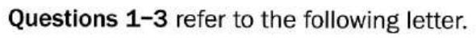
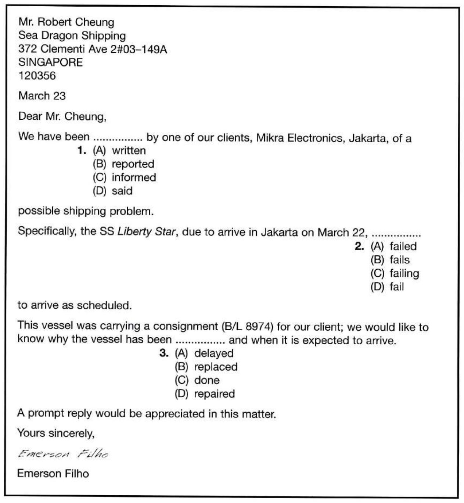
Question 1
Question 2
Question 3
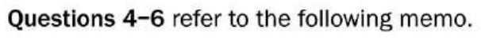
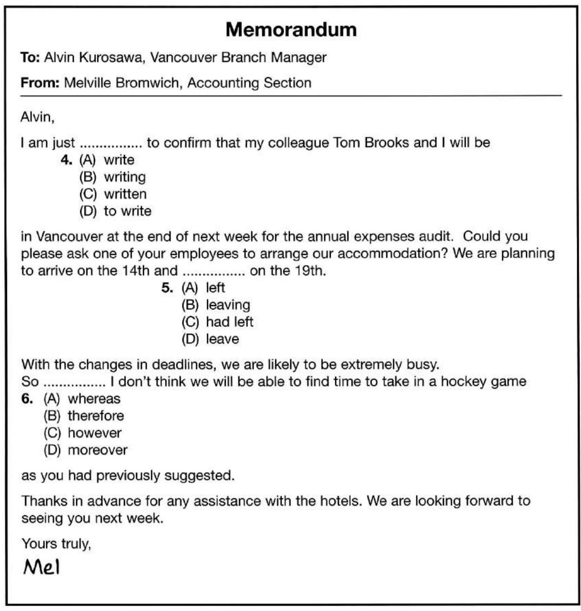
Question 4
Question 5
Question 6
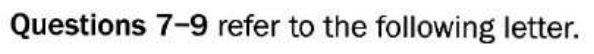
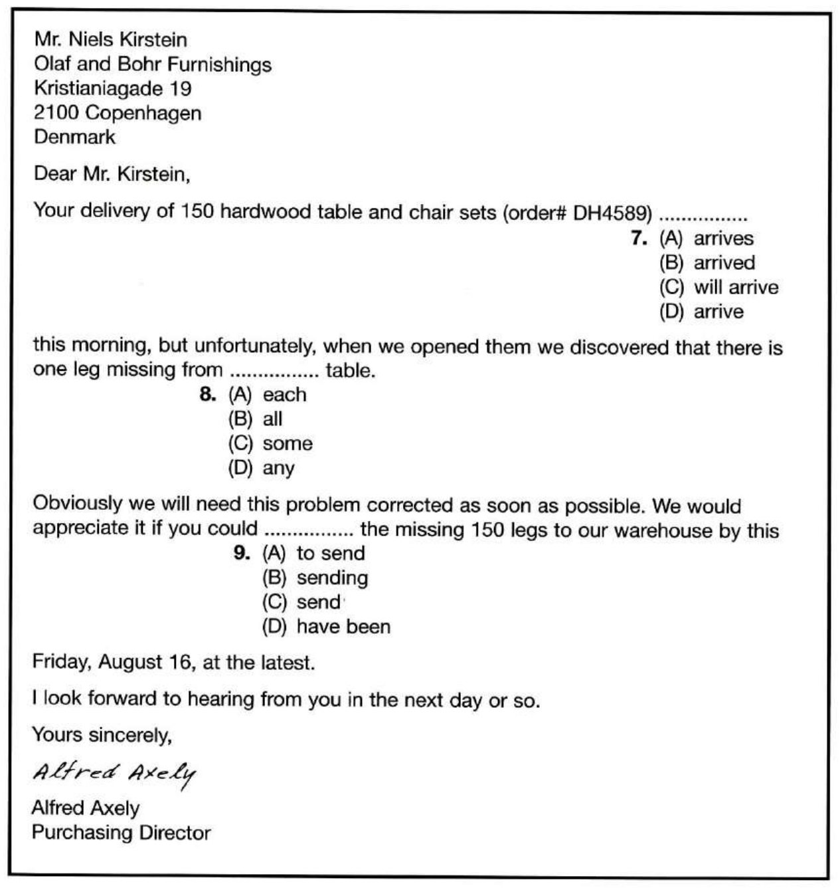
Question 7
Question 8
Question 9
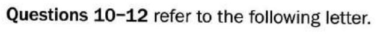
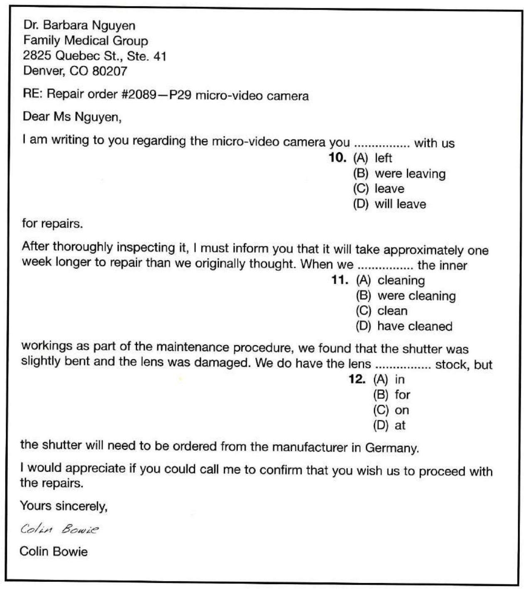
Question 10
Question 11
Question 12
C
Grammar practice
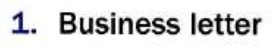
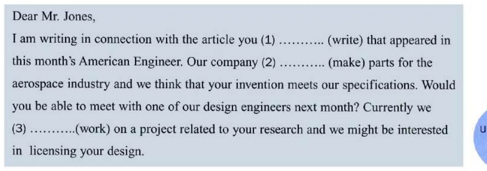
Blank 1 — (write)
Blank 2 — (make)
Blank 3 — (work)
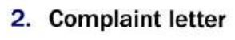
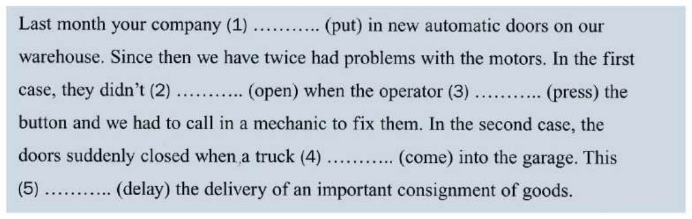
Blank 1 — (put)
Blank 2 — (open), after didn't
Blank 3 — (press)
Blank 4 — (come)
Blank 5 — (delay)
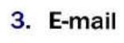
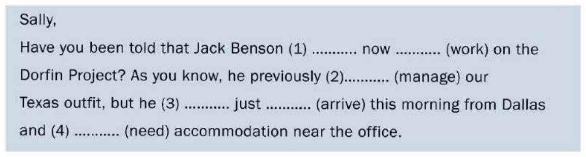
Blank 1 — (work), around now
Blank 2 — (manage)
Blank 3 — (arrive), around just
Blank 4 — (need)
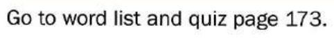